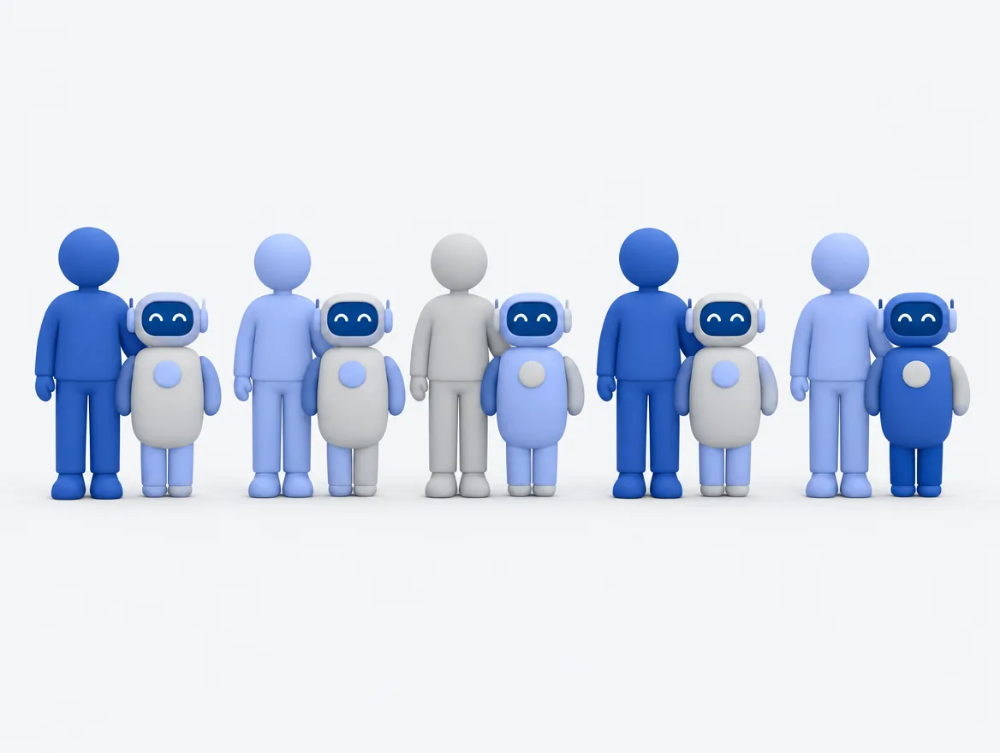
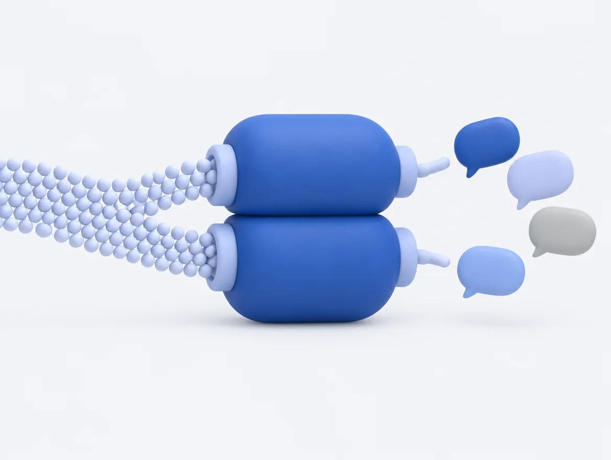
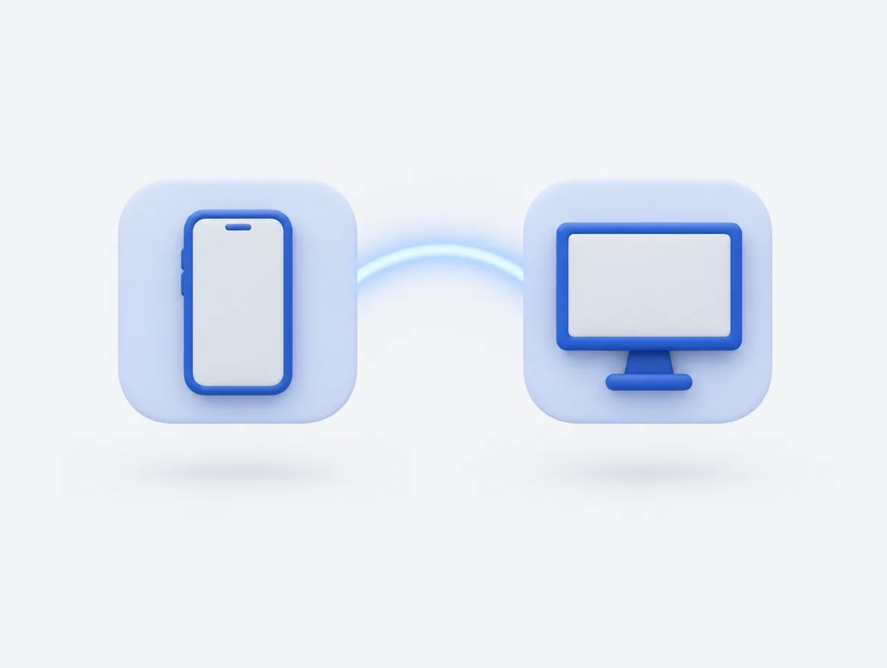
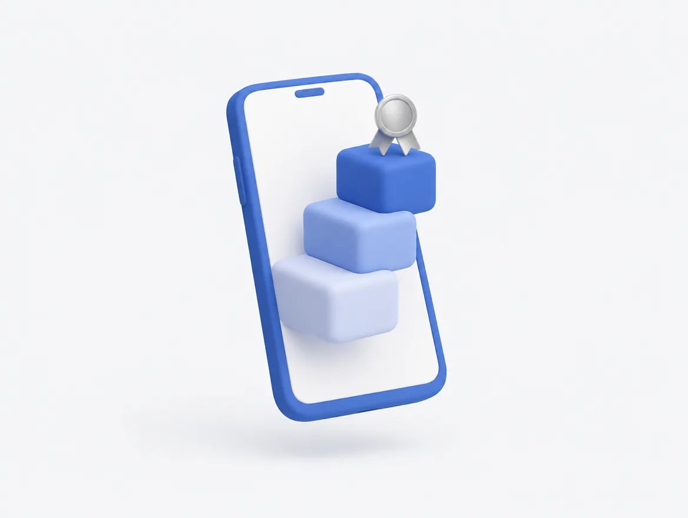
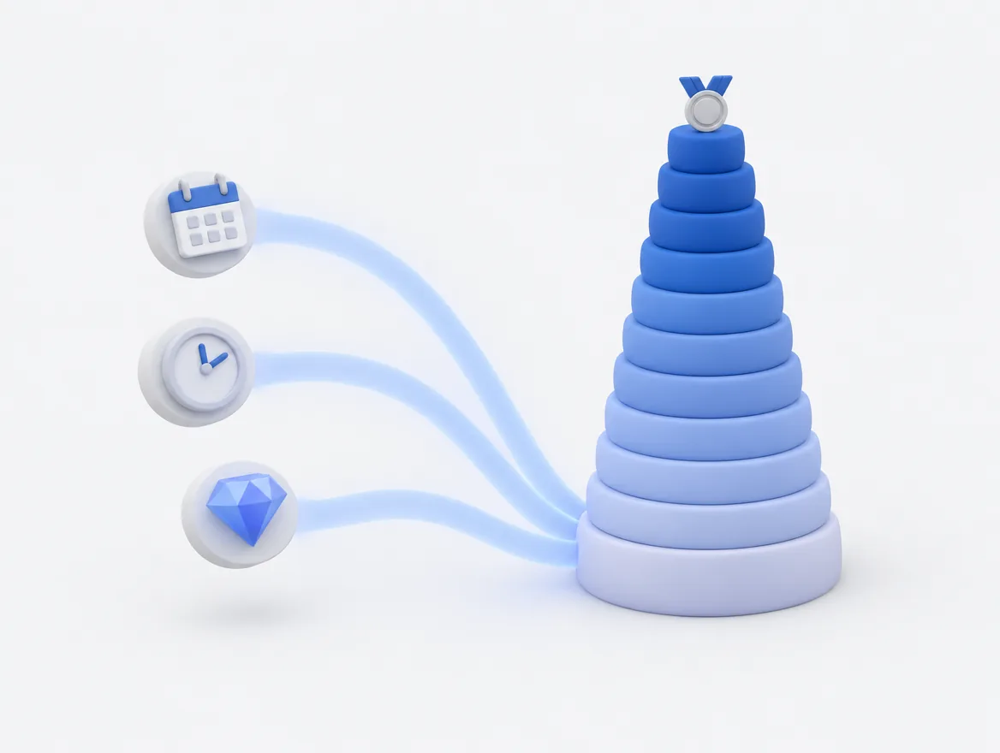

所属クリエイター全員の隣に、
AIの相棒を。
TikTok LIVE事務所のためのAI伴走サービスです。一人ひとりの配信データを見て、その人だけの声かけをLINEで毎朝お届けします。配信が止まる兆しに、手遅れになる前に気づきます。
クリエイターの日課はありません。運営の日課は、データを1回アップロードするだけです。
今月、あと1日配信できたら“配信した日”が7日になります。時間もあと1時間ちょっとです。
当日の朝にまた声をかけますね。
TikTok LIVEエージェンシー事業には
構造上の問題があります。
所属クリエイターが増えるほど、担当者一人あたりの抱える人数が増えます。毎月のスカウト数に対してはKPIを設定しても、担当者のリソースは比例して増えません。エージェンシーの収益は獲得したクリエイターの配信実績で決まるため、マネジメントリソースの追いつかないKPIはKPIと呼べません。これは担当者の努力の問題ではなく、構造の問題です。

全員には手が回らない
担当者は、成果の出ている人と、明らかに問題のある人から見ます。その間にいる「静かに止まりかけている人」が、いちばん後回しになります。
気づいたときには、もう遅い
配信が止まってから日が経つほど、戻ってきてもらえる確率は下がります。気づく早さが、そのまま結果に出ます。
一斉配信は読まれない
全員に同じ文面を送っても、自分宛てだと思ってもらえません。だからといって、一人ずつ書く時間はありません。
全てのクリエイターの隣に立ち、
自動で伴走するAIです。
毎日クリエイターに寄り添い、コミュニケーションを取り続けます。一人一人の配信実績を把握しているため、クリエイターごとに最適化された相棒が生まれます。エージェンシー報酬の各タスク達成に向けて自然な形で配信を促し、配信離脱者を検知します。新しいアプリは不要です。クリエイターはLINEを使うだけで始められます。

毎日、寄り添う
一人ひとりのデータを見て、その人だけの言葉で声をかけます。誰にでも当てはまる文章は送りません。
離れる前に、気づく
配信が止まる兆しを見つけて、手遅れになる前に動きます。運営には「今日、誰に何をすべきか」だけをお見せします。
手間を、増やさない
運営の日課は、日次データを1回アップロードするだけ。シナリオを書いて仕込む作業はありません。
こういう言葉が、毎朝届きます。
3人とも状況が違うので、文面も違います。テンプレートを差し替えているのではなく、その日のデータを見て、その場で書いています。
今月の到達まで、あと1日
昨日の配信が45分
しばらく配信がない
この3人に、担当者は何もしていません。ai-boが自動で判断して送っています。
全員に同じ言葉は送りません。
2つのエンジンが、その人に合った声かけを組み立てます。
所属クリエイターを自動で仕分けし、それぞれに合ったエンジンへ振り分けます。「対象者リストを作る」という作業自体が、そもそも発生しません。

全員
メッセージ
クリエイターにも、運営にも。
クリエイターが見る画面と、運営の方が見る画面は別です。それぞれにできることを、1つのサービスでまかないます。

クリエイターから見たai-bo
- 毎朝の声かけ その日の状況に合わせた、自分宛ての言葉が届きます
- 24時間の相談対応 いつでも話せます。答えられないことは運営に取り次ぎます
- 配信メモ その日の配信をふり返って記録できます
- コラボ相手の紹介 相性のよい相手を見つけて、顔合わせまで橋渡しします
- 事務所への質問の取り次ぎ 聞きづらいことも、ai-bo経由なら聞けます
- 音声通話 声で話せます。声の種類と性格を選べます
運営から見たai-bo
- 要対応者の抽出 離脱しかけている人、あと一歩の人を自動で並べます
- 成果の推移 稼働率・復帰率・前月比を、月ごとに追えます
- クリエイター一覧と個票 一人ずつの状況と履歴を確認できます
- 声かけ配信 内容を確認してから送れます
- 稼働状況の確認 ai-boが何を送り、どう反応があったかが見えます
- コラボの管理 マッチングの進行状況を把握できます
開いて最初に出るのは、
「今日、誰に声をかけるか」だけです。
数字の一覧ではありません。動くべき相手と、その理由が並びます。理由は一人ずつ違います。

今日、声をかけたい人
本人に見えるのは、自分の成長だけ。
事務所様の報酬やインセンティブの仕組みは、クリエイター側には一切表示されません。ai-boがご本人に語るのは、その方自身の成長だけです。

マイステータス。今月どこまで来たか、次の段まで何が足りないかが見えます。
見せないものを、決めてあります
- 事務所の報酬は表示しません インセンティブの仕組みも含め、一切出しません
- 他の人の実績は見えません 順位や比較は本人には出しません
- ランクが下がったことは伝えません 上がったときだけお祝いします
- 共有範囲は本人に明示しています 「やり取りは事務所が確認することもあります」と利用開始時に伝えます
報酬タスクと連動した
独自ランク制度。
配信日数・配信時間・ダイヤモンド数で実績を評価し、LINEでクリエイターに表示します。クリエイターは常に次のランクを目指し、ランクアップと同時に報酬タスクを満たします。ランクは10段階です。

全員
1時間
—
3時間
1,000
25時間
10,000
35時間
50,000
45時間
200,000
モンド
70時間
500,000
90時間
1,000,000
110時間
3,000,000
110時間
5,000,000
→ 横にスクロールすると、レジェンドまでご覧いただけます。
数値は上から配信した日／配信時間／ダイヤ。3つすべてを満たした最高位が、その月のランクになります。毎月1日に積み上げ直しとなり、前の月のランクは画面に併記されます。
見守りと、プライバシーの設計。
AIに任せきりにはしません。人が出るべき場面と、本人に見せないものを、あらかじめ決めてあります。

深刻な相談は、見逃しません
AIが深刻な悩みの兆候を検知したら、ご本人の同意を得たうえで運営の方に共有します。音声通話でも同じ確認を行っています。
共有範囲は、本人に伝えています
「やり取りは所属事務所が確認することもあります」と、利用開始時にご本人へ明示しています。隠して集めることはしません。
データは事務所ごとに分離
事務所ごとに独立した環境をご用意します。他の事務所とデータが混ざることはありません。
「公式LINEの自動配信は、もう入れている」という方へ。
Lステップなどの配信ツールを導入済みの事務所は多くあります。ai-boは、その延長線上にはありません。

| これまでの公式LINE運用 | ai-bo | |
|---|---|---|
| メッセージの作り方 | 人がシナリオを書いて仕込む | その場で組み立てる。仕込みは不要 |
| 送る内容 | 分類ごとの定型文 | 一人ひとりに合わせた個別の文面 |
| 分類の粒度 | あらかじめ決めたパターンの数だけ | クリエイターの人数だけ |
| 前提にするデータ | 登録時の属性・行動タグ | 毎日の配信実績（時間・日数・ダイヤ） |
| 運用の手間 | シナリオを作り、育て、直し続ける | 日次データを1回アップロードするだけ |
ai-boは「事前に仕込んだメッセージを送る仕組み」ではありません。
その日のデータを見て、その人のための文章を、その場で書いています。
初期費用はいただきません。
ai-boはすでに完成して稼働しているシステムです。御社のためにゼロから開発するのではなく、御社専用の環境を新しく立ち上げるため、開発費が発生しません。
契約期間 最低3か月、以降は1か月単位です。解約は1か月前までにお知らせいただければ結構で、途中でおやめになっても追加のお支払いは発生しません。
価格を抑えてご提供しているのは、まだ導入実績がないためです。効果をお約束するのではなく、「導入前と比べて測れます」というかたちでご提案しています。
最短1週間で始められます。
ゼロから開発するのではなく、御社専用の環境を新しく立ち上げる形です。だから短期間で始められます。
ヒアリング
御社の運営の進め方と、困っていることをお伺いします。必要な機能を見極めたうえで構成を決めます。
専用環境の構築（1〜2時間）
事務所ごとに独立した環境をご用意します。他の事務所とデータが混ざることはありません。
LINE公式アカウントのご準備
クリエイター用と運営用の2つをご用意いただきます。手順はこちらでご案内します。
クリエイターの登録
LINEで友だち追加して、TikTokのIDを送っていただくだけです。
運用開始
日課は、日次データを1回アップロードするだけ。あとはai-boが自動で判断して声をかけます。
ai-boはパッケージ製品として売り切るものではありません。「この機能は使わない」「この場面で声をかけてほしい」——どちらも反映できます。拡張に機能上の縛りはありません。
よくいただくご質問
商談でよくいただくご質問を、そのまま載せています。ここにないことは、LINEでai-bo自身にお聞きください。
導入実績はどのくらいありますか？
クリエイターはアプリを入れる必要がありますか？
毎日、運営は何をすればいいですか？
AIが変なことを言ってしまいませんか？
クリエイターに事務所の報酬は見えますか？
いまLステップを使っていますが、併用できますか？
途中でやめられますか？
ai-bo 自身が、ai-bo について答えます。
LINEで友だち追加していただくと、ai-boとそのまま会話できます。実際の受け答えを見ていただくのが、いちばん早いと思います。音声通話もお試しいただけます。
しつこい追客はいたしません。ご質問にだけお答えします。
運営者情報
- 屋号
- ai-bo
- 代表者
- 横瀬 天夢
- 所在地
- 東京都墨田区緑4-4-5 パークアクシス錦糸町WEST 705
- 連絡先
- info@ai-bo-lab.jp
- 事業内容
- TikTok LIVE事務所向けAI伴走サービス「ai-bo」の提供・運用・保守
現在は個人事業として提供しております。法人化の準備を進めており、設立後はご契約をそのまま法人へ引き継ぎます。